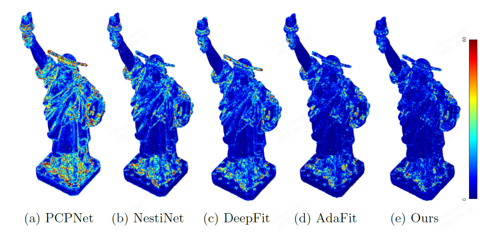
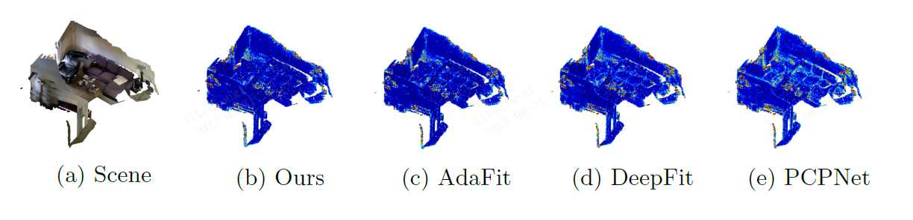
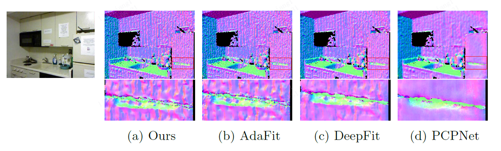
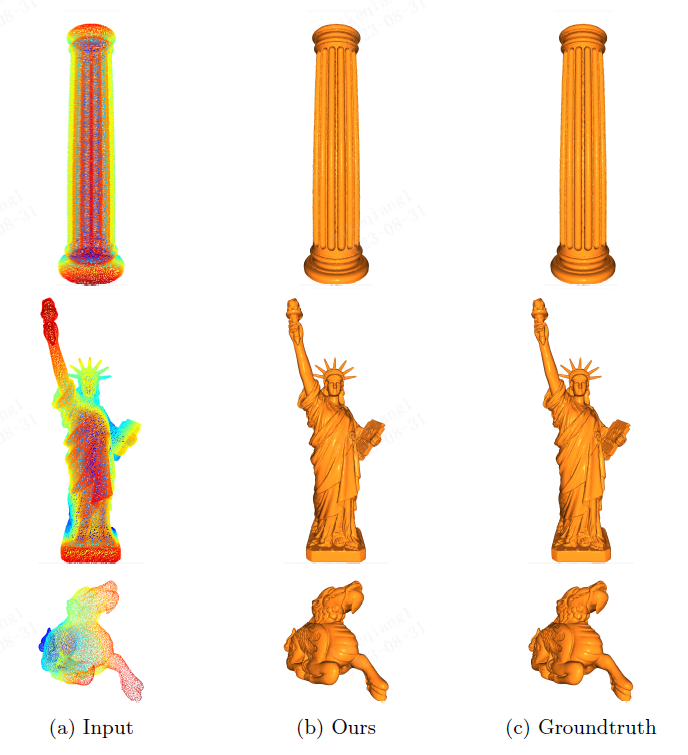

Abstract
We propose a precise and efficient normal estimation method that can deal with noise and nonuniform density for unstructured 3D point clouds. Unlike existing approaches that directly take patches and ignore the local neighborhood relationships, which make them susceptible to challenging regions such as sharp edges, we propose to learn graph convolutional feature representation for normal estimation, which emphasizes more local neighborhood geometry and effectively encodes intrinsic relationships. Additionally, we design a novel adaptive module based on the attention mechanism to integrate point features with their neighboring features, hence further enhancing the robustness of the proposed normal estimator against point density variations. To make it more distinguishable, we introduce a multi-scale architecture in the graph block to learn richer geometric features. Our method outperforms competitors with the state-of-the-art accuracy on various benchmark datasets, and is quite robust against noise, outliers, as well as the density variations.
Results



Application

Related work
- PCPNET: Learning Local Shape Properties from Raw Point Clouds (2018)
- DeepFit: 3D Surface Fitting via Neural Network Weighted Least Squares (2020)
- AdaFit: Rethinking Learning-based Normal Estimation on Point Clouds (2021)
BibTeX
@inproceedings{li2022graphfit,
title={GraphFit: Learning Multi-scale Graph-convolutional Representation
for Point Cloud Normal Estimation},
author={Keqiang Li, Mingyang Zhao, Huaiyu Wu, Dong-Ming Yan, Zhen Shen, Fei-Yue Wang and Gang Xiong},
booktitle={European conference on computer vision},
year={2022}
},